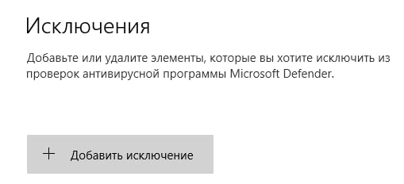

Что делать, если анти-вирус ругается на игру?
Шаг 1 - Попробуй добавить установщик в исключения антивируса.
Вот как это делается на примере Microsoft Windows Defender:
1. В трее найди иконку анти-вируса "Windows Defender" и открой его.
2. Перейди в раздел "Управление настройками":

3. Пролистай раздел вниз, там ты найдешь "Исключения", нажми на "Добавление или удаление исключений":
4. Нажми на "Добавить исключение", выбери "Файл", если антивирус ругается на установщик, или "Папка" и выбери папку с игрой, если антивирус ругается на игру:
Если это не помогло, то переходим ко второму шагу.
Шаг 2 - Попробуй отключить анти-вирус и установить игру.
( Не бойся, в нашем установщике нет никаких вирусных угроз, если ты скачал его с нашего сайта, по этому, можешь не переживать за здоровье своего компьютера. )
Вот как это делается на примере Microsoft Windows Defender:
1. В трее найди иконку анти-вируса "Windows Defender" и открой его.
2. Перейди в раздел "Управление настройками":
3. Найди пункт "Защита в режиме реального времени" и выключи его:
Примечание: После установки лаунчера можно включить его обратно.
Не помогло? Напиши нам в поддержку.